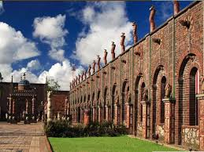
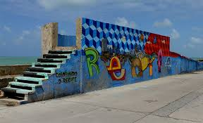
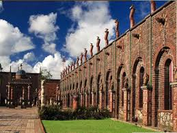
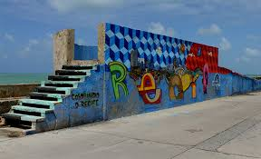

1 - PARQUE DAS ESCULTURAS FRANCISCO BRENNAND
Ainda no Marco Zero, é dali que você parte para outro importante ponto: o Parque das Esculturas, uma instalação a céu aberto sobre o molhe do porto, composta por 90 obras do artista plástico Francisco Brennand, inaugurada em comemoração aos 500 anos do Descobrimento do Brasil. Dentre as esculturas, o destaque vai para a imponente Coluna de Cristal, que não passa despercebida com seus 32 metros de altura.
 



2 - PAÇO DO FREVO
Não dá para visitar Pernambuco e não arriscar alguns passos de frevo, afinal, o ritmo foi declarado Patrimônio Imaterial da Humanidade pela Unesco! No Paço do Frevo é Carnaval o ano inteiro. Lá estão expostos fotos e documentos que contam a história do ritmo e guarda registros do carnaval pernambucano que se manterão vivos para as futuras gerações. São três andares que guardam um rico acervo e, para acompanhar a visita, os corredores são embalados pelo som do frevo!